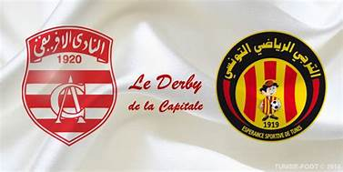

Club african
Club african
Saison 2020-2021 de la LIGUE I Tunisienne
Parcours
| classement | résultat | matchs prochains | meuilleur buteur | buteurs |
|---|---|---|---|---|
|
|

Esperance Tunis - Club Africain 30.01.2021 (14:00)
|

yassine chamakhi (2 buts)
|
|
Statistiques des présidentes journées:
- Nombres de matches:8
- Victoire:1
- Nul:4
- Défaite:3
- Buts marquées:7
- Buts contre:12